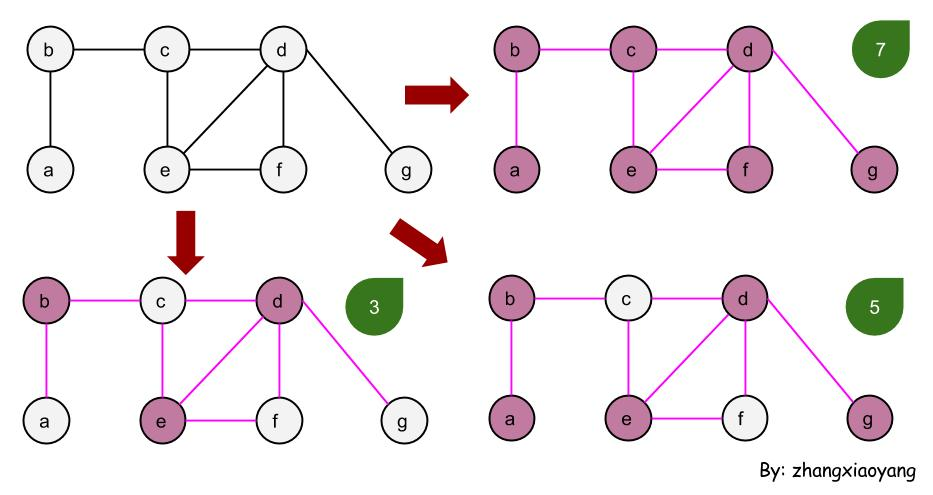
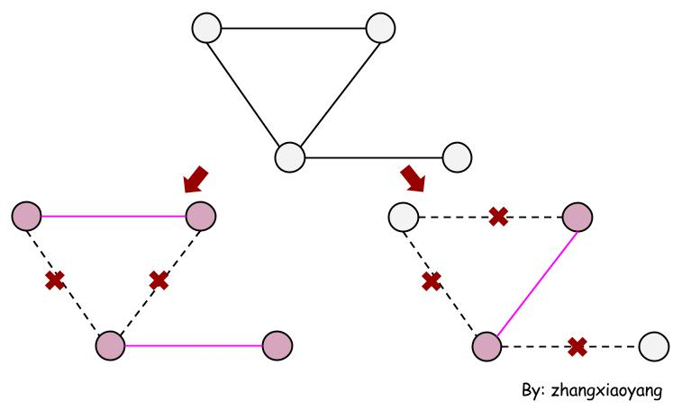

自学算法导论(9)
我们如何处理NPC甚至NPH问题呢？总是要采取点措施吧。
许多最优化的问题都是NPH的问题，只要P不等于NP，就无法在多项式的时间内找到最优解。对于已知的解决NPH问题的算法都有指数型运行时间。但是，如果我们只求“可以接受的解”而非最优解，就可能有多项式时间的算法，看来做事不能太执着。
于是，人们退而求其次，求解可以接受的近似解。通常可采取以下几种解题策略：
- 只对问题的特殊实例求解
- 用动态规划法或分支限界法求解
- 用概率算法求解
- 只求近似解
- 用启发式方法求解
近似算法（求近似解的策略）是一个主要的方向，所以这里主要学习如何通过近似算法来hold住这些很难的问题。
怎样的“近似解”才算是近似解呢？怎样的算法才能称作近似算法呢？我们需要先学习下基础知识，要不然太乱了。
近似算法（Approximation Algorithm）
近似算法中的“近似”，往往是针对最优化问题来说的。所以，近似算法应该主要用来解决最优化的问题，并且要求近似算法为多项式级的时间花费。这里假设，近似算法解决的是最优化问题。
对于一个近似算法，我们比较关心以下两点：
- 算法的时间复杂度（必须为多项式级的）
- 解的近似程度（可能与算法设计、问题规模、输入实例等有关）
算法的时间复杂度可以直接求得，所以关键是解的近似程度。下面看一下如何来衡量解的近似程度。
近似比（Approximate Ratio）
我们使用$C^*$表示最优解（当然，我们得不得这个解），$C$表示近似解，$\eta$表示近似比，则有：
$$\eta = max \lbrace \frac{c}{c^*}, \frac{c^*}{c} \rbrace$$
很显然，$\eta$是一个大于1的数，越接近于1，说明近似解越接近最优解。如果近似解等于1，我们就更开心了。
对于同一个问题所求得的近似解可能会变化。比如问题规模改变了，近似解就跟着变了。所以，这是一种函数关系，我们使用$\rho(n)$表示，如下：
$$\eta = max \lbrace \frac{c}{c^*}, \frac{c^*}{c} \rbrace \leq \rho(n)$$
这里的$\rho(n)$和算法的复杂度$O(n)$的作用很像，都是在表示一个上界。因为我们担心近似解太差以至于和最优解相差太多，所以我们需要这样一个边界来保证算法不会太差。
如果算法的近似比能够达到$\rho(n)$，就称该近似算法为$\rho(n)$-近似算法（$\rho(n)$-Approximation Algorithm）。
相对误差（Relative Error）
有时候用相对误差表示近似算法的近似程度更加方便，使用$\lambda$表示相对误差，则有：
$$\lambda = |\frac{c-c^*}{c^*}|$$
同样考虑到问题规模改变时，相对误差可能随之改变。使用$\varepsilon(n)$表示这种函数关系（称为相对误差界），则有：
$$\lambda = |\frac{c-c^*}{c^*}| \leq \varepsilon(n)$$
这里的$\varepsilon(n)$和$\rho(n)$的作用类似，都是表示一个边界，有了边界我们才放心。有许多问题的近似算法有固定的近似比和相对误差，即$\rho(n),\varepsilon(n)$不随问题的规模发生变化，此时使用$\rho,\varepsilon$表示。
近似模式（Approximation Scheme）
之前的$\rho(n)$-近似算法只有一个参数，即问题的规模n。近似模式多了一个正的常数$\varepsilon$，所以这种“模式”称为$(1+\varepsilon(n))$-近似算法，所以表示的是一类算法。
任意给定一个$\varepsilon$，这种“模式”都可以在多项式时间内完成，并且可以任意的逼近最优解。但是，随着$\varepsilon$变小，所花的时间可能急剧增多，比如$O(n^{2/\varepsilon})$。
这样的“模式”称为多项式时间近似模式（Polynomial-time approximation scheme，简称PTAS）。
疑惑
到目前为止都是在YY。在求近似比的时候，我们根本不知道最优解，如何来得到近似比，公式里明明有最优解！明明说了要避开最优解，求近似解，怎么还是在使用最优解？
到下面的实际例子中就会感受到，这不是YY，真的可以这样搞。
顶点覆盖问题（The Vertex-cover Problem）
不知道是不是智商的问题，读了N次题意，都没有理解。到底什么是顶点覆盖问题呢？偶然看到维基百科对于“覆盖”的解释，豁然开朗。
图的覆盖是一些顶点（或边）的集合，使得图中的每一条边（每一个顶点）都至少接触集合中的一个顶点（边）。寻找最小的顶点覆盖的问题称为顶点覆盖问题，它是一个NP完全问题。
与其说是“顶点覆盖”，倒不如说成“顶点接触”。就是在一个图中，使用最少的点与所有的边接触。其中，这个图是一个连通的无向图，只要与边的任意一个端点接触就算“接触”（如果与边的两个端点都接触也行）。
顶点覆盖示例
对于一个顶点覆盖问题，可能会有多种覆盖的方式，如下图。这里列出了3种覆盖方式，覆盖的点越少（红色点），我们更开心，但是我们要保证接触到所有的边。比较保守的方法是使用所有的点，在这里是7个点。但是这不是我们的目标，我希望点越少越好。在这里，我们更喜欢有3个点覆盖的图。

为什么要研究这个问题呢，应该和一些资源分配等实际应用有关吧。比如，在多个地区开设警察局（救助站等等），希望能够覆盖到所有的地区并且消耗的资源最少（在这里是开设的警察局最少）。
顶点覆盖问题已经被证明是NPC问题了，所以是无法找到多项式时间的算法来搞定它的。于是，我们想到了近似算法。当然，也带着前面的疑惑——无法得到最优解，如果计算近似比？
下面给出了一种近似解决顶点覆盖问题的算法，伪代码如下。
C = {}//empty set
E' = G.E//a copy of graph's edges
while E' is not empty
(u, v) = arbitrarily choose a edge of E'
C = C ∪ {u, v)
remove from E' every edge incident on either u or v
return C
可以发现，该算法求的不是最优解。因为在选择边的时候，把边的两个端点都加入到了“顶点覆盖”当中。但是实际情况是，这样的添加有时候会导致得到的解偏大，如下图。

主要问题是arbitrarily的选择，导致我们在选择的时候不能保证最优。虽然我们一直在找最小的顶点覆盖，但是这里的最小并不会特别小。因为，有一个下界来约束我们所要求的最小值（最优解）。对于这种近似求解的方式，我们可以有$|C^*| \geq |A|$，其中A表示近似算法选择的边集合，也就是算法的第4行得到的边的集合。
并且，我们还有$|C|=2|A|$。因为近似解（也就是顶点个数）肯定是边的2倍（一条边对应2个顶点）。
然后，我们会得到$|C|=2|A| \geq 2|C^*|$，竟然能得到$\frac{|C|}{|C^*|} \geq 2$。也就是说，我们得到的近似解是最优解的2倍。所以，这种近似求解顶点覆盖的算法是一个多项式时间的2-近似算法（多项式时间的验证需要求解近似算法的时间复杂度）。
重新思考近似算法
通过上面的例子，可以发现，我们在不知道最优解的情况下得到了近似比。也就是说，我们在不知道最优解的情况下，可以证明近似算法到底有多“近似”。之所以能达到这个效果，主要归功于“边界”。对于一个最小化问题，我们不知道最优解有多小，如果能知道最优解不会比某个值还要小，那么就得到了边界。如果还能知道近似解和边界的关系，就能够得到近似比，进而说明我们的算法尽管不准确，但是可以被接受。
所以，关键问题在于边界。如果找的边界不好，可能会导致我们不相信设计的算法（哪怕算法的真实情况是真心不错的）。
总之，不仅仅要设计一个多项式时间的近似算法，而且要证明其与最优解相差不大。近似比能帮我们说明这一点，但是没有边界就求不了近似比。
其实近似算法的设计和普通的算法设计没有两样，可能用到贪心，也可能用到线性规划，就是一普普通通的算法。同样要求一下时间复杂度，并且我们对时间复杂度要求很严，必须是多项式时间（因为我们牺牲准确度就是为了换取时间）。
特别不一样的地方在于，我们要求解近似比。近似算法可以不准，但是必须要近似，只有经过了近似比的考量，才能算是一个好的近似算法。引用一下卜老师课件上的话：
The process of design of approximation algorithm is not very different from that of design of exact algorithms. It still involves unraveling the problem structure and finding algorithm techniques to exploit it.
参考链接：
- http://zh.wikipedia.org/wiki/%E8%BF%91%E4%BC%BC%E7%AE%97%E6%B3%95
- http://staff.ustc.edu.cn/~xiaomj/teaching/sf10.pdf
- http://remonstrate.wordpress.com/2012/02/09/%E8%BF%91%E4%BC%BC%E7%AE%97%E6%B3%95%EF%BC%88%E4%B8%80%EF%BC%89/
- http://wenku.baidu.com/view/733ed35a312b3169a451a4eb
- http://www.csie.ntu.edu.tw/~hsinmu/courses/lib/exe/fetch.php?media=dsa2_11spring:approx.pdf
-- EOF --